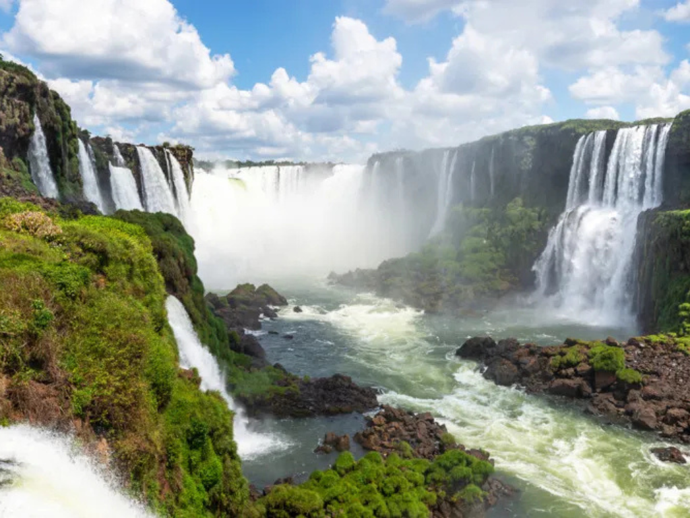

O Rio Grande do Sul é o estado mais ao sul do Brasil, conhecido por sua forte identidade cultural, marcada pelas tradições gaúchas, como o chimarrão, o churrasco e a música regional. Sua paisagem é bastante diversa, com pampas extensos, serras cobertas por araucárias e cidades históricas que refletem a influência de imigrantes europeus, especialmente alemães e italianos. A economia do estado é baseada na agropecuária, na indústria e nos serviços, destacando-se na produção de grãos, vinhos e carnes. Além disso, o povo gaúcho é reconhecido por seu orgulho regional e hospitalidade, mantendo vivas suas tradições ao longo das gerações.

Voltar